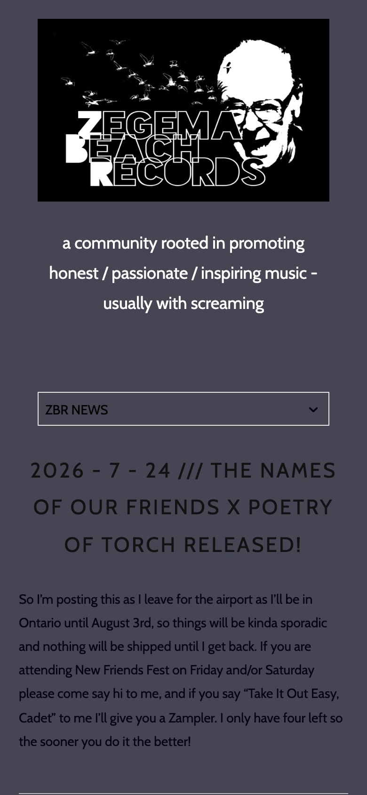
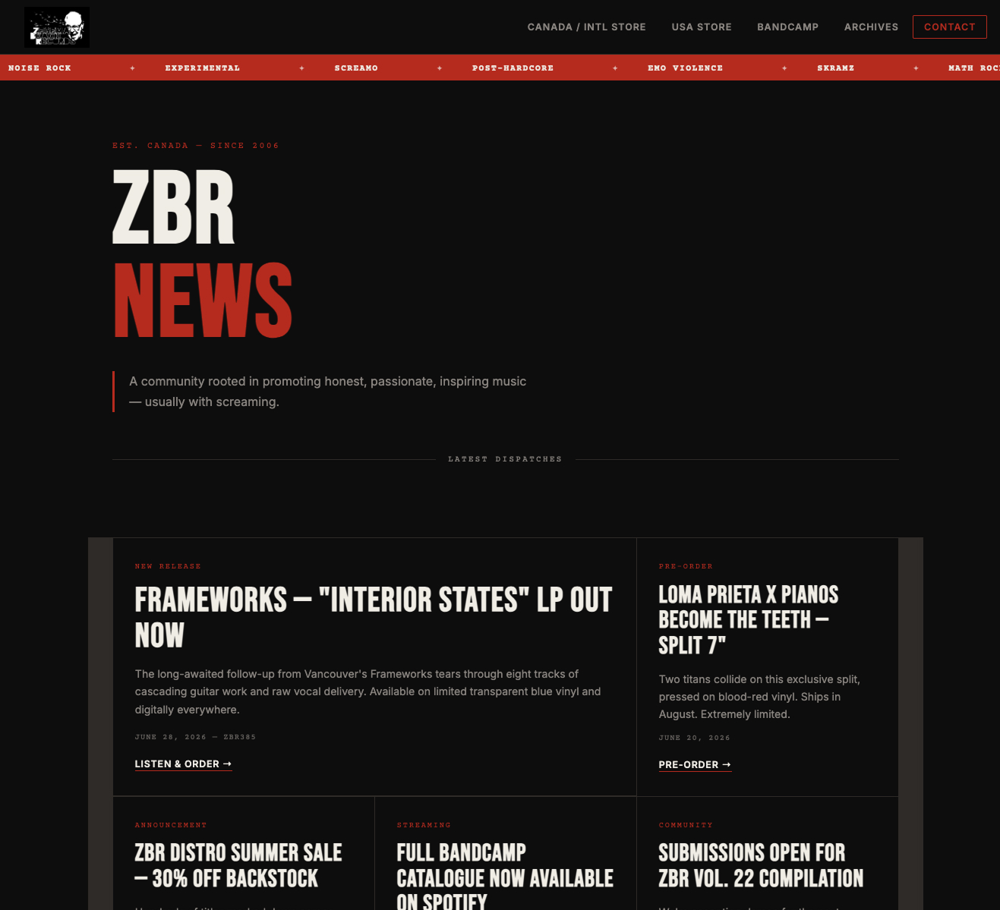
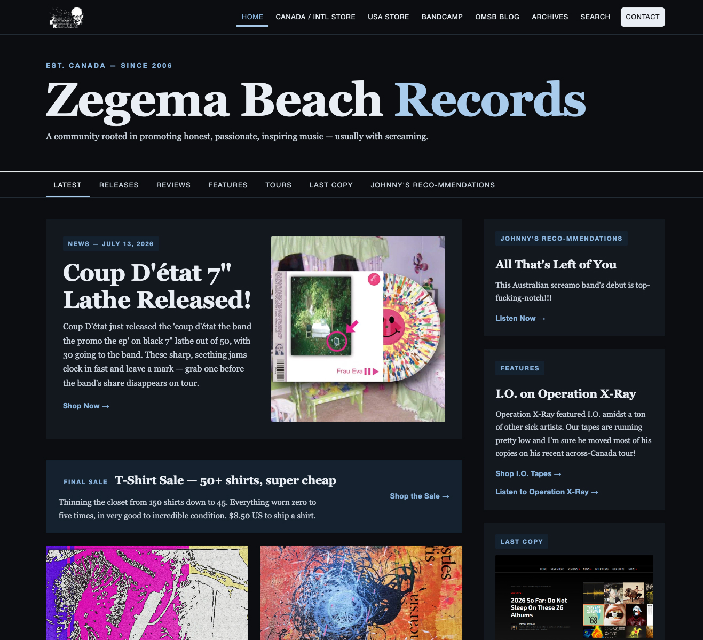
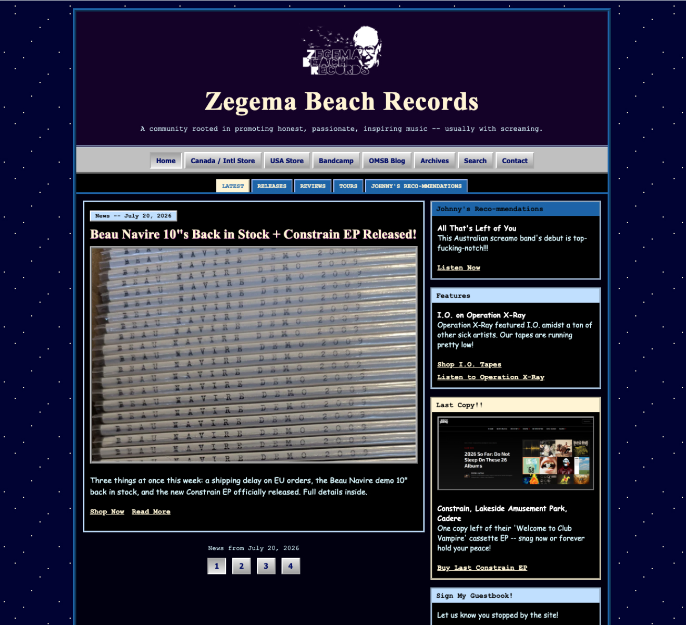
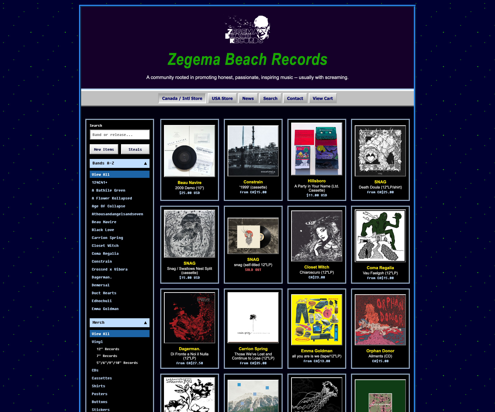

Rebuilding an independent record label's website while honoring its DIY roots.
Zegema Beach Records is an independent record label based in Ladysmith, British Columbia. The quantity and quality of their output have both outgrown their current Squarespace template and deserve to be showcased on a bespoke, user-friendly website, allowing fans to buy merchandise or see what the label and its associated bands are up to.
We'll walk through the old site, the process of building a prototype with Claude Code, and how I re-skinned the existing Squarespace site with custom code.
zegemabeachrecords.com, before the redesign
Disorganized content. Blog posts, product blocks, and reviews are interleaved with no visual separation.
No dedicated store landing page. The current store consists of a drop down navigation menu.
Large hero logo. Logo takes up a large portion of the landing page, preventing users from viewing actual content.
Extra large music players and photos cause longer load time, leaving gaps between text.
The homepage's full scroll height on a standard desktop viewport — roughly 45 screens of scrolling to reach the bottom, with no jump links, pagination, or way to filter what you're looking at.
No search. No filters. No sort. Nothing to narrow a catalog of hundreds of releases.
19 separate flat pages split by format and alphabet instead — 12" (#–N), 12" (O–Z), 7", 5"/6"/9"/10", Cassettes, CDs, Posters (#–O), Posters (P–Z), Buttons, Stickers, Steals, two Sold Out pages…
The label runs a companion podcast and blog, and posts on Instagram and YouTube — none of it is linked from the site's navigation. The Archives menu is a single flat dropdown of 30-plus band interviews, listed as bare text with no thumbnails, search, or grouping.

Low-contrast text. Body copy renders in near-black over dark slate — well under WCAG contrast minimums.
One unlabeled dropdown for all six pages. It has a chevron, but doesn't read as a main nav menu.
Claude Code is only as capable as its driver. I actively validated and questioned every design decision until my vision was fully formed and executed.
As a designer who has never written a line of code, it was exciting to see designs instantly come to life. I started with a few basic prompts to get a feel for Claude's capabilities. The results felt generic, and ZBR needed a fun, gritty theme to host its content. I remembered an old Björk site that employed Web 1.0 styling with a modern twist, and it seemed like the perfect direction for ZBR.



The store is the homepage. Canada / Intl is now a real landing page instead of a dropdown menu — users expect to land in a store, and now they do.
Real filters: text search, button toggles, filter categories — collapsible, and full-width on mobile.
Selected filters persist as you move between the grid and a product page, so "Back to Store" returns you to where you were.

Bespoke Bandcamp players fit seamlessly within the design.
A Quick Links hub puts the podcast, blog, Bandcamp, YouTube, Instagram, and archives one click from the News page.
Organized content. The old Home page is now simply News, with releases, sales, reviews, and features properly labeled and organized.
Character limits and pagination eliminate the endless scroll.
Type a band or release name, get live matches across news posts and the full catalog site-wide.
From zero to fully searchable.
A labeled ☰ Menu button, not an unlabeled dropdown menu.
Readable contrast throughout — no near-black text on dark backgrounds.
Swipeable photo galleries — built for touch, not just resized from desktop.
Quick Links navigation added under the main nav bar on the homepage.
| Feature | Live site | Redesign |
|---|---|---|
| Site search | None | Live search across news & catalog |
| Store landing page | 19 flat category pages | One filterable grid |
| Filters / sort | None | Search, New/Steals, Bands A–Z, Merch, Labels |
| Product pages | Squarespace default | Gallery + lightbox, swipe, variant picker |
| Bandcamp Player | Large and unwieldy | Bespoke styling, thoughtful placement |
| Cart | Squarespace default | Persistent, custom-built |
| Social / podcast / blog links | Not linked in nav | Quick Links hub on homepage |
| Mobile nav | Unlabeled dropdown | Labeled ☰ Menu button |
| Contrast / accessibility | Fails WCAG in places | Passes throughout |
| Guest book | None | Sign & browse a Guestbook |
| Mailing list | None | Sign-up widget on homepage |
| Widgets | None | Reviews, Features & Johnny's Recos panels |
| Page organization | Single column | Two-column layout (feed + widgets) |
| News pagination | None | Grouped by date/week posted |
| Character limit with expanding CTA | None | Shortens the scroll |
| DIY / nostalgic feel | Somewhat | Preserved & extended |
Same design. Real checkout, real inventory, real customers.
Keep the existing site and layer the redesign on top of it. Squarespace keeps doing what it's good at (payments, inventory, the editor, the domain) and three layers of custom code bring the new site to life. Nothing changes for the site owner, everything changes for the user.
Restyles Squarespace's own templates: header, nav, product pages, cart, search, contact and news.
Rearranges what the template renders: news cards, numbered pages, Bandcamp players, back links, the pop-up.
New pages built from native Squarespace blocks, created as Not Linked and added to the menu last.
Custom code overrides templated product, cart, search and contact pages.
Product page. Price, option menu, quantity and Add to Cart share one row. The Bandcamp player is inserted by the footer script where the template had a plain "Listen here" link.
Cart. One line per item (name left; quantity, price and Remove right), the subtotal bar unpinned from the bottom, a padlock on Checkout.
Two-column news page. On desktop, the news feed sits beside a sidebar of Quick Links, Reviews and Features instead of the template's single column.
Cart badge. The template's floating cart pill is hidden and replaced by a View Cart button in the nav with a live item count.
Moving to Squarespace meant rethinking details of the Vercel design. Many of the changes made the site easier to use, especially on mobile.
"Back" works anywhere. "Back to Store" became a plain "« Back" that returns to the page you came from, so it can be used on any page.
Pagination that scales. Numbered pages built to handle 500+ pages of news, with arrows that slide the set of numbers.
One guestbook page. Viewing and signing happen on a single page. Partly for ease and partly a Squarespace requirement, but a happy coincidence for visitors.
An empty cart has a way out. A button takes shoppers back to the store instead of leaving them at a dead end.
Filters grouped on mobile. The three collapsed filter menus sit together so more of the product grid is visible.
Quick Links at both ends. On mobile the bar also sits under the pagination, easy to reach from the top and the bottom of the page.
"View Cart" after adding. On mobile, a View Cart button appears once a product has been added.
Shareable store links. Filters live in the address, so a pre-filtered view like ?cat=sticker can be linked directly.
The guestbook and the mailing list could have been faked in the front end. Instead each one is a real Squarespace feature wearing the redesign, so the data lands where the label already looks for it.
A Blog page with one post. Entries are its comments, with approval required, so moderation is Squarespace's existing Manage Comments queue. The CSS and script turn comment threads into guestbook entries.
A hidden page holding a native Newsletter block, shown inside a pop-up frame so visitors never leave the page. Sign-ups go straight to the list the label already has, and a custom thank-you replaces the template's form.
Search the catalog, filter the grid, open a product, add it to the cart, read the news and sign the guestbook. It's the actual Squarespace site, with real checkout behind it.
zegemabeachrecords.com → Opens in a new tabThe redesign didn't need a new platform, a migration or a rebuild of the label's workflow. It needed three layers of code that sit on top of the Squarespace site and a launch plan that kept every URL, order and customer intact.